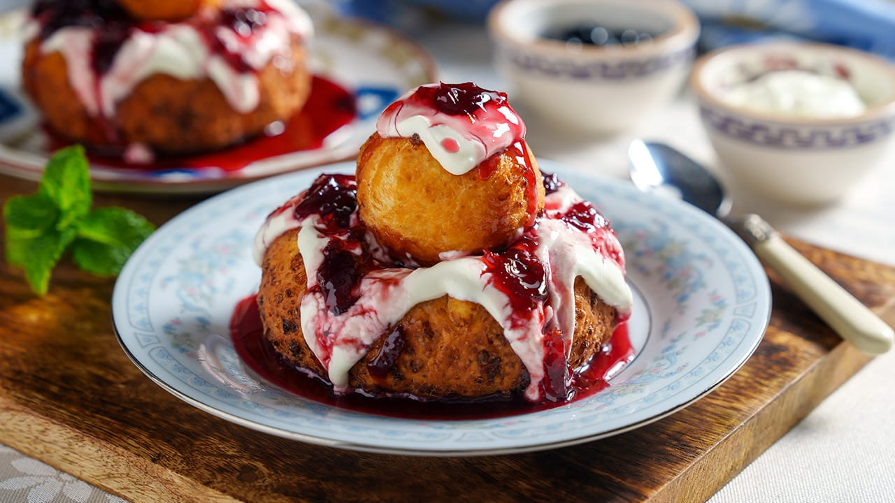

Reteta papanasi
Back to Recipes Index

Descriere
Papanasi is a traditional Romanian dessert made from cheese dough, typically served with sour cream and fruit preserves.
De ce avem nevoie?
- 500g branziza dulce si buna
- 2 oua
- 100g zahar
- 200g faina
- 1 pliculet praf de copt
- 1 lingurita esenta de vanilie
- 1 varf de cutit sare
- Ulei pentru prajit
- Smantana si dulceata pentru servit
Ce facem acum?
- Incepe prin a amesteca branza cu ouale si zaharul pana devin o compozitie omogena.
- Adauga faina, praful de copt, esenta de vanilie si sarea, amestecand bine.
- Formeaza bile din aluat si le apasa usor pentru a le da forma de papanasi.
- Incalzeste uleiul intr-o tigaie adanca si prajeste papanasii pana devin aurii pe ambele parti.
- Scoate papanasii pe un prosop de hartie pentru a absorbi excesul de ulei.
- Serveste-i calzi, cu smantana si dulceata pe deasupra.